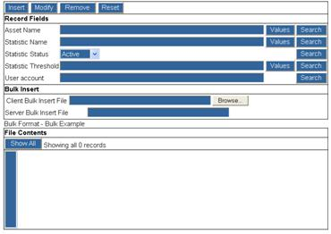

This file contains all active threshold settings for all monitored assets. Thresholds can be changed at the individual asset level, for a group of assets, or on a global level. When dealing with a group of assets the use of regular expressions comes into play. Only one statistic can be selected from the entry list at a time. If no asset name is specified in the asset name field, then any applied change applies to all inventories by default.

Figure 10.11 – Scope Threshold File
Key field descriptions are provided in the following table.
Table 10.10 – Threshold File Key Fields
|
Key Fields |
Description |
|
Asset Name |
the full name of an asset or a regular expression describing multiple assets:e.g., b01234.* - common regular expressions meta characters allowed: $ ^ [ ] .* |
|
Statistic Name |
the full name of an asset or a regular expression describing multiple assets: e.g., b01234.* - common regular expressions meta characters allowed: $ ^ [ ] .* |
|
Statistic Status |
enable or disable the collection of this statistic |
|
Statistic Threshold |
the threshold parameters |
|
User account |
the website account that established this threshold rule |
|
Bulk Insert File |
a file with records to insert to the main file - must be in the same format as the main file |